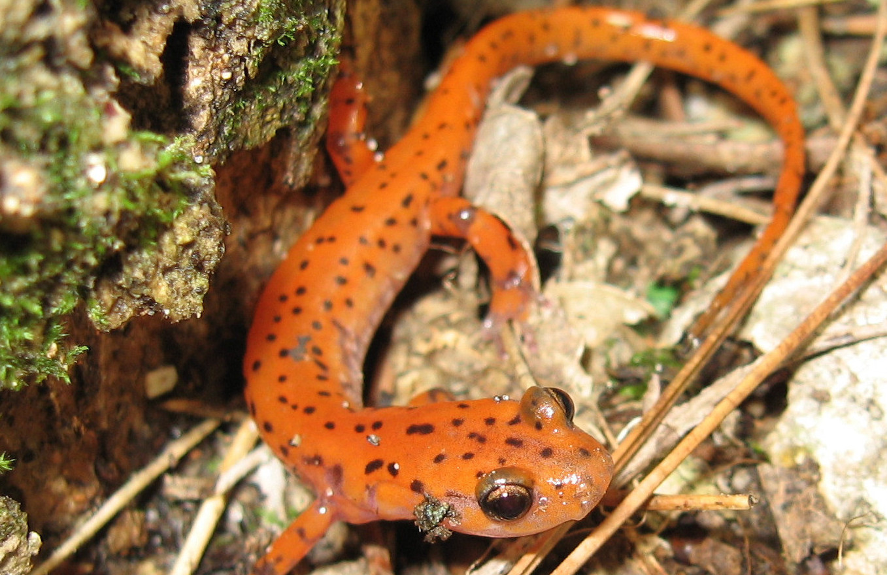

From 2008 to 2015 I worked as a wildlife field biologist. During this time I traveled the country working with birds, mammals, reptiles and amphibians.
The data that I collected was used to inventory species, make management plans and protect threatened species. Below are some of the many studies I've worked on.

My favorite position as a field biologist was working as a herpetology and small mammal technician in the Missouri Ozarks. The purpose of this research was to investigate the impacts of forest management on amphibians,
reptiles and mammals. At this position I used various trapping methods to collect animals and identified, measured and marked the animals before releasing them.
This data became part of an ongoing 100 year study designed to test if different timber harvest strategies affected the number of animals present at a location.